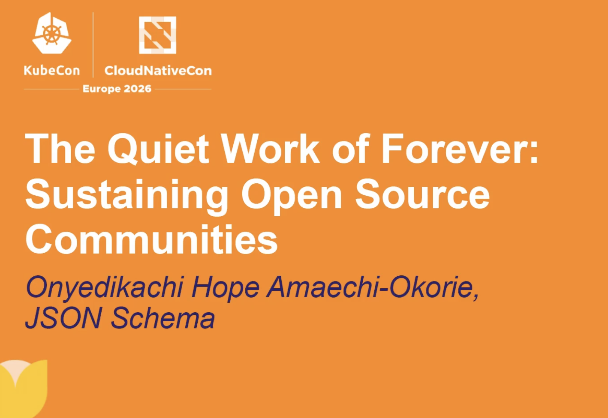
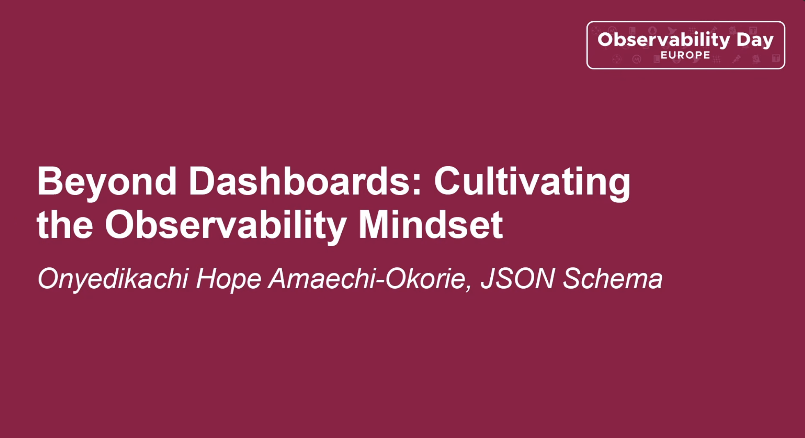

Writing
Blog posts, ecosystem updates, explainers, announcements, and community stories.
JSON Schema Conference Paris 2025 Wrap Up ↗Google Summer of Code 2025 Wrap Up ↗
Google Summer of Code 2024 Wrap Up ↗
01 / About
My work sits at the intersection of community building, advocacy, open source, accessibility, events, quality engineering, technical storytelling, research, and ecosystem growth. I build and support technical
communities, create spaces for people to learn and contribute, and help open source projects and ecosystems become more accessible, discoverable, and easier to adopt.
Accessibility is equally important to my work, influencing how I think about inclusive technology, digital experiences, and communities.
Across all of these areas, I am interested in connecting technology with people, making complex ideas easier to understand, products easier to use, communities easier to participate
in, and ecosystems stronger and more inclusive.
02 / COMMUNITY
Programs, conversations, onboarding, advocacy, events, and the work behind healthy technical communities.
Blog posts, ecosystem updates, explainers, announcements, and community stories.
JSON Schema Conference Paris 2025 Wrap Up ↗Recorded conversations, educational videos, community sessions, and technical storytelling.
Google Summer of Code (GSoC) Proposal Guide ↗03 / COMMUNITY
A dedicated collection of my work around opensource ecosystem, community, program, accessibility, education, content, and events.
Merge Forward: Stuttering & Speech Diversity Lead Organizer
See more → 02Co-organizer, 2024; Lead organizer 2025; 2026
Learn more → 03DEIA Program Committee Member
Learn more → 04Organization Admin 2024; 2025; 2026
See more →04 / RESEARCH
Research and long-form work exploring technology, AI, speech diversity, community, open source, and developer ecosystems.
Research exploring how speech diversity intersects with AI systems, representation, and the experiences of people whose voices are often underrepresented.
Read paper ↗In this paper, we conduct a narrative review of the current and potential harms that can be caused through interaction with AI chatbots.
Read Paper ↗05 / SPEAKING
A record of talks, panels, workshops, interviews, webinars, and recorded sessions.

TALK - KubeCon | CloudNativeConf Europe 2026
Watch recording ↗
TALK - KubeCon | Observability Day Europe 2026
Watch recording ↗06 / CONTRIBUTIONS
Open source contributions, mentorship, fellowships and other contributions.
Our mission is to ensure that everyone can access the conversation on how AI is being implemented in society.
Read our work ↗07 / FEATURED
A collection of newspapers, television features, interviews, and other media coverage that has highlighted my work, projects, ideas, and contributions to technology and community.
In this conversation, Onyedikachi shares how she balances advocacy with high-impact community strategy, building safe spaces for atypical communicators, her work is rooted in one belief: every voice deserves to be heard.
Read our work ↗08 / BADGES
A collection of badges and recognitions earned along the way, from professional learning and community programs to contributions, events, and milestones that have shaped my journey across technology and open source.
The Digital Public Goods Open Source Community Manager Program is designed to bring the capacity needed to grow the DPGs’ communities of contributors, and their long-term sustainability and positive impact on critical challenges.
See badge ↗